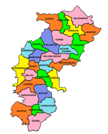

Chhattisgarh, a state in central India, is known for its rich cultural heritage and diverse natural landscapes.
The state features lush forests, scenic waterfalls, and picturesque tribal villages that showcase its unique charm.
Among its notable attractions are the ancient temples of Bhoramdeo and the stunning Chitrakote Falls,
which capture the region’s natural beauty and historical significance.
Chhattisgarh's heritage is also reflected in its vibrant festivals, such as the Bastar Dussehra,
which highlights the traditional customs and lively spirit of its local communities.
With its blend of cultural richness, historical landmarks, and natural wonders,
Chhattisgarh provides an intriguing destination for those seeking both exploration and relaxation.
|
 |